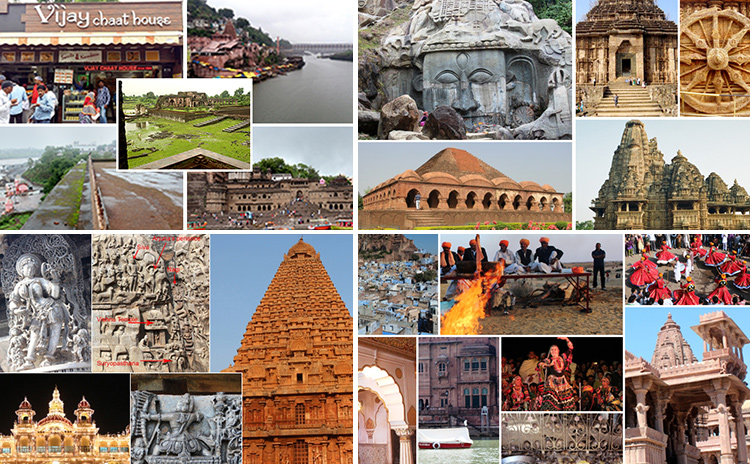
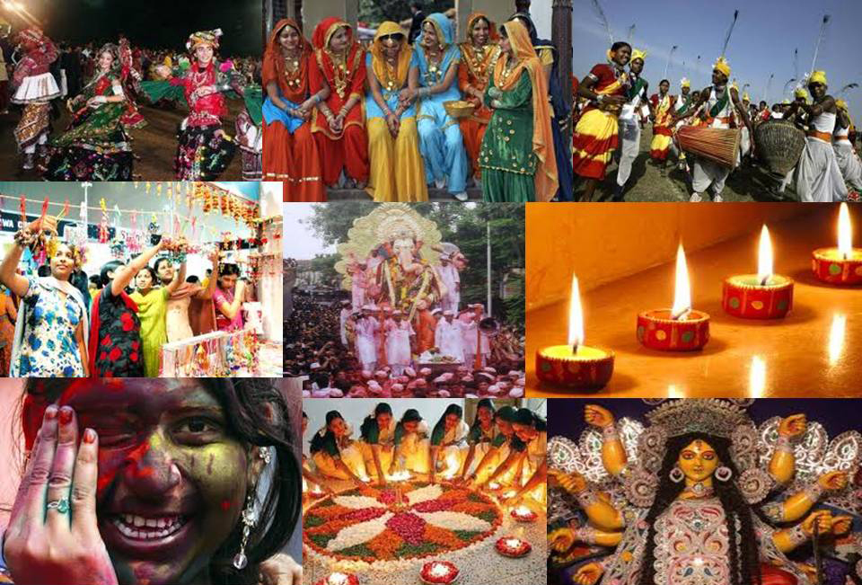

Discover the beauty and richness of diverse cultures around the globe.
Home About Info prise list and order page
The culture of India refers to the way of life of the people of India. Amazing cultural diversity throughout the country. India’s languages, dances, music, architecture, food and customs differ from place to place within the country. There is hardly any culture in the world that is as varied and unique as India's Department of Geography Jawaharlal Nehru College, Pasighat

India is one of the most religious countries in the world with large and active populations of Hindus (80.45%), Muslims(13.43%), Christians(2.34%), Sikhs(1.86%) and others. Unlike in the West where one’s faith is considered “private”, Indians tend to display their religion prominently. People who are irreligious are looked upon rather suspiciously. A person’s name, occupation, style of dress, marriage partner, and diet are all largely based on religion Department of Geography.
Religions revolve around historical figures (like Jesus, Buddha, or Muhammad) and their teachings, with a strong emphasis on external practices. Spirituality: This is about feeling connected to something larger than yourself, living with reverence, and seeking meaning and purpose.Spirituality and religion are often used interchangeably, but the two concepts are different. Some authors contend that spirituality involves a personal quest for meaning in life, while religion involves an organized entity with rituals and practices focusing on a higher power or God.
The purpose of Spiritual and Religious Life is to support and advance the exploration and expression of spiritually, religious life, faith-traditions, values and philosophies of life within the context of higher education.Spirituality involves the recognition of a feeling or sense or belief that there is something greater than myself, something more to being human than sensory experience, and that the greater whole of which we are part is cosmic or divine in nature read more
Cultural diversity is about appreciating that society is made up of many different groups with different interests, skills, talents and. needs. It also means that you recognise that people in society can have differing religious beliefs and sexual orientations to you. read more